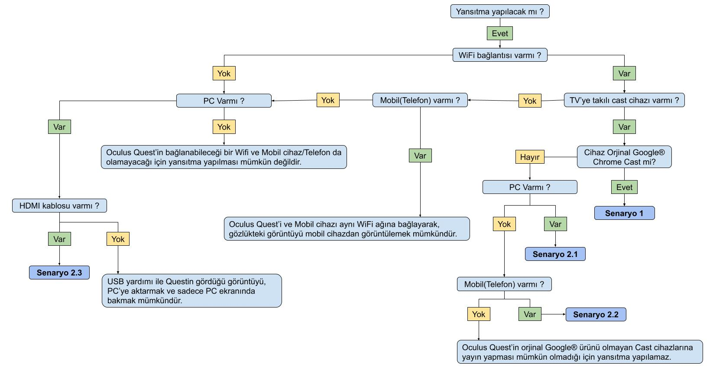

Anyone who has never made a mistake has never tried anything new!
I have created several documents and workflows for myself and people I worked with. Those notes are in Turkish and you can see them below.
(!)NOTE: Some of the stuff down there are clipped and excluded because of conficientality. If you have a specific question about a workflow, or have a “how to” question, please feel free to contact me and I will do my best to help you out about that question in a professional way.
Notes about "How to" Global Mapper Program - KMZ/KML conversion to DWG
Notes about "How to" Infraworks Program, Presentation and Workflows
Oculus Quest and Simple VR Setup Workflow

Notes about "How to" Blender Program and Shortcuts
3D Printer Operation Notes
(!)NOTE: Some of the workflows and other documents are clipped and excluded because of conficientality. If you have a specific question about a workflow, or have a “how to” question, please feel free to contact me and I will do my best to help you out about that question in a professional way.